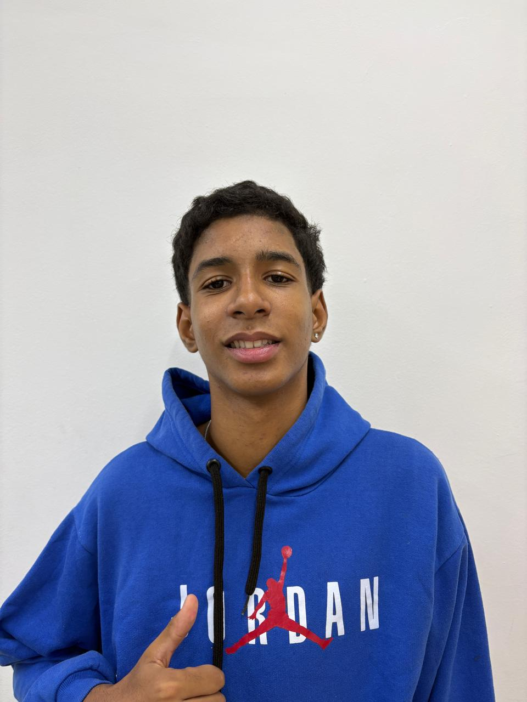

Sobre mim

Sou Luis Guilherme Jeremias Nunes da Silva, estudante do 1º ano do Ensino Médio no IFMT – Campus Cuiabá, e uso as olimpíadas científicas para aprender a resolver problemas difíceis. Em 2026, fui classificado para a Fase Nacional da OBI (Programação Nível 1, em C++), terminando em 163º lugar entre 2.923 participantes. Também fui convocado para a pré-seletiva internacional da Olimpíada Brasileira de Astronomia, na qual já conquistei uma medalha de bronze em 2024. Tenho menções honrosas na OBMEP (2024) e na Olimpíada de Matemática da UNEMAT (2025) e participei do PIC da OBMEP e do POTI. Sou bolsista de iniciação científica júnior (FAPEMAT/IFMT), com um projeto sobre geometria de distâncias que une teoria dos grafos, geometria computacional e algoritmos em C++. Minha meta é crescer na programação olímpica, disputando o Nível 2 da OBI em 2027 e buscando a seletiva da IOI, com o sonho de cursar a graduação no MIT.
Hobbies e Interesses
- Programação competitiva e desenvolvimento web
- Praticar esportes
- Assistir Filmes
- Correr nos finais de semana
Meus Objetivos
- Concluir minha formação em informática.
- Ser medalhista na OBI(Olímpiada Brasileira de Informática).
- Ser medalhista na OBM(Olímpiada Brasileira de Matemática).
- Conseguir uma vaga no MIT.